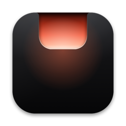

Islet
The notch,
made useful.
Islet turns the camera cutout of your MacBook into a living island. Music, AirPods, volume, battery, files, timers and the AI agents you run, right where you already look.
Hover the notch. Open apps in the Dock. Drag a file onto the notch. Press ↑ ↓ for the volume. Every sound is made by your browser.
It lives in the notch. It stays out of your way.
Islet has three states, and moves between them with the same springs as the rest of macOS.
The size of the notch
Closed, Islet is exactly the camera cutout. The menu bar around it keeps every click, and nothing runs.
Two small wings
A song, the volume, a timer, an agent at work: the island grows wings beside the camera. They never cover a menu or an icon.
Everything, one gesture away
Hover or click and it opens: player, agenda, shelf, clipboard, tools. Swipe down to open, up to close, sideways to skip a track.
The menu bar comes first. Islet reads where the menus and the icons are on every app switch. When an app’s menus reach the notch, the activity keeps a single wing on the free side; with no room at all, it waits in the open island.
All you expect from the notch. Then the parts nobody built.
Islet does what the best notch apps do, drawn by the Mac’s own graphics engine so it stays smooth and light. Turn off any page you never use, and it disappears.
Now playing
Cover, controls, a scrubber and your audio output for Apple Music, Spotify and any player. The bars dance in the colour of the cover.
Volume and brightness
The keys show a quiet gauge in the notch instead of the big system square.
AirPods and battery
Each earbud and the case the moment they connect, charging and low battery.
File shelf and AirDrop
Drop files on the notch, carry them anywhere, drag them out or send them with AirDrop.
Clipboard history
Text and images you copied, with pins. Kept in memory only; passwords are never recorded.
Agenda and reminders
The next events of your day beside the clock, a Join button for video calls, and what is due today.
Timer, colour picker, mirror
A countdown in the wings, an eyedropper for any pixel, a camera mirror before a call, and keep awake.
System at a glance
Processor, memory, disk and network, sampled only while you look.
Microphone and camera New
See which app is listening or filming, right where the camera is.
AI agents New
Claude Code, Codex, Gemini CLI and Cursor in the notch. Allow or deny a tool without leaving what you are doing.
Programmable notch New
Any script shows its progress with one command. Shortcuts actions, islet:// links and extensions too.
Every Mac New
No notch? Islet floats just under the menu bar, on built-in and external displays alike.
Your AI agents, in the notch.
Claude Code, Codex, Gemini CLI and Cursor tell Islet what they are doing through their own hooks. You see which one is working, on which project, and when one needs you. When Claude Code or Codex asks for permission, the island opens with Allow and Deny.
- Connect every agent on your Mac in one click, in Settings or during setup
- Islet never signs in to any AI service; it only hears the hooks on your Mac
- Ignore a request and the agent asks in the terminal, as usual
- If Islet is closed, the hooks exit at once and change nothing
| Agent | Where Islet adds its hooks | In the notch |
|---|---|---|
| Claude Code | ~/.claude/settings.json | Sessions, and permission requests with Allow and Deny |
| Codex | ~/.codex/hooks.json | Sessions, and permission requests with Allow and Deny |
| Gemini CLI | ~/.gemini/settings.json | Sessions, and a sign when Gemini waits for you |
| Cursor | ~/.cursor/hooks.json | Agent sessions, their edits and commands |
| Anything else | islet agent | Working, waiting and done, from one line in any script |
Islet keeps a backup of every settings file it edits and leaves the rest of it untouched. Codex runs new hooks once you trust them with /hooks. Chat apps in the browser offer no hooks, so Islet does not follow them.
Light on your Mac. Clear about which ones.
Memory at rest with every feature on, and almost no processor time while nothing moves. The island is drawn by the Mac’s compositor, and its content only exists while it is open.
Measured on a 14-inch MacBook Pro, macOS 26.5, one minute idle after launch, helper processes included.
Where the island lives
| MacBook Pro 14 and 16 inch, 2021 and later | In the notch |
|---|---|
| MacBook Air 13 and 15 inch, M2 and later | In the notch |
| MacBook Air M1, MacBook Pro 13 inch | Floating island |
| iMac, Mac mini, Mac Studio, Mac Pro | Floating island |
| External displays | Floating island, or stay on the notch |
macOS 14 Sonoma or later, Apple silicon and Intel. Full screen apps hide the island, except for alerts, unless you ask otherwise.
Islet and the other notch apps.
Measured and checked the same way on the same Mac. The others stay anonymous: the point is what you get, not who is behind it.
| Islet | Notch app A | Notch app B | Notch app C | |
|---|---|---|---|---|
| Price | Free | $14.99 | Free | Free |
| Open source | MIT | ○ | GPL | GPL |
| Memory at rest | 12 MB | 56 MB | 71 MB | 106 MB |
| Processor at rest | 0.03 % | 0.01 % | 3.9 % | 6.8 % |
| Music with controls | ● | ● | ● | ● |
| Volume and brightness display | ● | ● | ● | ● |
| File shelf and AirDrop | ● | ○ | ● | ● |
| Lock Screen | ◐ | ● | ? | ● |
| Microphone and camera in use | ● | ? | ○ | ● |
| Never covers the menu bar | ● | ? | ? | ? |
| Command line, socket API, Shortcuts | ● | ○ | ○ | ◐ |
| AI agents: Claude Code, Codex, Gemini CLI, Cursor | ● | ○ | ○ | ○ |
| Extensions | ● | ○ | ○ | ● |
● yes · ◐ partly or in beta · ○ no · ? not verified. Measured on a 14-inch MacBook Pro, macOS 26.5, September 2026.
It sits by your camera. It keeps to itself.
No account, no tracking
No sign in, no analytics. The only connection Islet makes is a daily check for updates, and you can turn it off.
Nothing leaves your Mac
Clipboard history lives in memory and forgets passwords. The camera runs only while the mirror is open.
A socket only you can reach
Scripts and agents talk to Islet through a file in your user folder that only your account can open. No network port.
Hidden from screen sharing
One switch keeps the island out of screenshots, recordings and shared screens.
Permissions you choose
Islet asks only for what the modules you picked need, one at a time, with the reason.
Signed and notarized
Every build is signed with a Developer ID and checked by Apple. Updates are signed with Islet’s own key.
Every line is on GitHub.
Islet is MIT licensed. Read exactly what runs on your Mac, change it, ship your own. Issues and pull requests are welcome.
A window shaped like the notch
A borderless panel sits over the camera. Closed, it is exactly the notch, so the menu bar keeps every click. No global mouse monitor.
Drawn by the compositor
The outline is a Core Animation shape morphed with springs. Bars, rings and countdowns are animations the system plays by itself.
Content only while open
The pages are SwiftUI views, created as the island opens and thrown away as it closes. A closed island holds no view tree.
Listening, not polling
Volume, devices, battery, microphone and camera tell Islet when they change. The rules of the island are tested on their own.
Questions
Does my Mac need a notch?
No. On a MacBook with a notch, Islet lives in it. On other Macs and on external displays it floats just under the menu bar, invisible until something happens.
Will it cover my menu bar icons?
Never. Islet measures where the menus and the icons are, on every app switch. The wings shrink to the free space, keep a single wing when an app’s menus reach the notch, and wait in the open island when there is no room at all.
Is it really free?
Yes. Islet is free and open source under the MIT License. No account, no subscription, no tracking.
Which permissions does it ask for?
Only those the modules you choose need: Accessibility for the volume and brightness keys, Calendars and Reminders for the agenda, Bluetooth for headphone battery, the camera only while the mirror is open.
Is it safe with my AI agents?
Islet never signs in to any AI service and never sees your account. It listens to the hooks Claude Code, Codex, Gemini CLI and Cursor call on your Mac, a documented feature of each, and Allow in the notch is the same as typing yes in the terminal.
Does it work with ChatGPT or Gemini in the browser?
No. Chat apps offer no hooks, and following them would mean reading your screen, which Islet will not do. Any agent or script that can run a command can report with islet agent.
Can a website push things to my notch?
No. The socket lives in your user folder and only processes running as you can open it. Browsers cannot reach it.
How do I install and update it?
Open Islet.dmg and drag Islet to Applications. It is signed and notarized by Apple, so it opens without a warning. Updates arrive inside the app, signed with Islet’s own key, when you allow them.
How do I remove it?
Disconnect your AI agents in Settings, Developers, so their settings files forget Islet, then quit Islet from its right-click menu and move it to the Trash.
Is Islet made by Apple?
No. Islet is an independent open source project and is not affiliated with Apple.

Look up. It’s already there.
Free, open source, and ready in a minute.
macOS 14 or later · Apple silicon and Intel · Notarized by Apple. Updates arrive through the app, when you allow them.